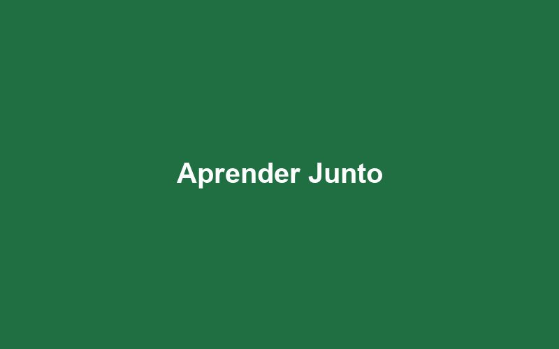
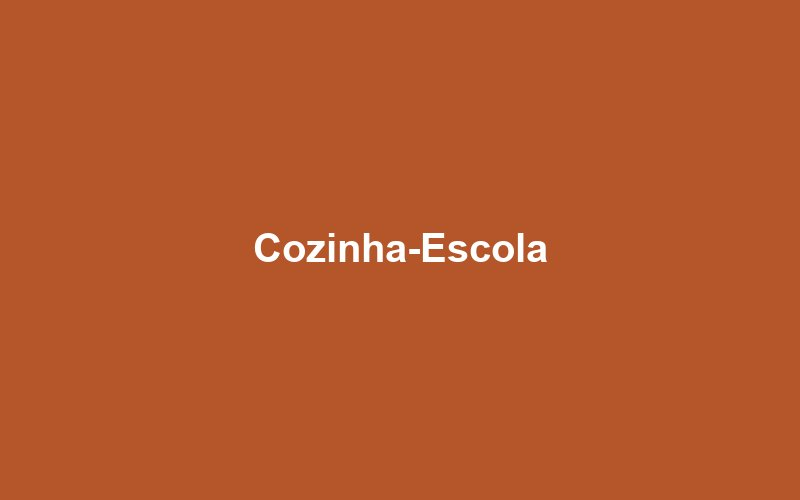
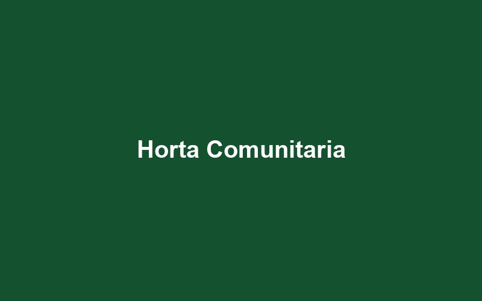

Três frentes permanentes, todas na sede do Jardim Oriente, conectadas entre si: a horta alimenta a cozinha, a cozinha alimenta as crianças do reforço, e o reforço forma quem vai cuidar da horta.
Projetos ativos
Aprender Junto

Reforço escolar em turmas de até dez crianças.
Reforço escolar no contraturno para crianças de 6 a 12 anos matriculadas na rede pública. Cada turma tem no máximo dez alunos e uma educadora fixa, com foco em leitura, escrita e matemática básica.
Público atendido
180 crianças por ano, em quatro turnos.
Resultados em 2025
92% das crianças avançaram pelo menos um nível de leitura.
Evasão escolar caiu de 11% para 3% entre os participantes.
Como participar
Precisamos de voluntários com ensino médio completo, duas vezes por semana, em turnos de duas horas.
Cozinha-Escola

Turma de formação profissional em cozinha industrial.
Curso gratuito de auxiliar de cozinha para jovens de 16 a 24 anos, com 160 horas de prática. A mesma cozinha prepara as 200 refeições diárias servidas às crianças do Aprender Junto.
Público atendido
Quatro turmas de 12 jovens por ano.
Resultados em 2025
36 jovens formados, 24 empregados em até seis meses.
41.600 refeições servidas no ano.
Como participar
Cozinheiros profissionais como instrutores voluntários e doações de alimentos não perecíveis.
Horta Comunitária

A horta que deu origem ao instituto, em 2014.
Produção agroecológica em 900 m² que abastece a Cozinha-Escola e distribui cestas semanais para famílias em situação de insegurança alimentar.
Público atendido
140 famílias recebem cestas semanais.
Resultados em 2025
4,2 toneladas de hortaliças colhidas.
12 famílias iniciaram hortas próprias com mudas doadas.
Como participar
Mutirões aos sábados pela manhã, abertos a qualquer pessoa, sem experiência necessária.